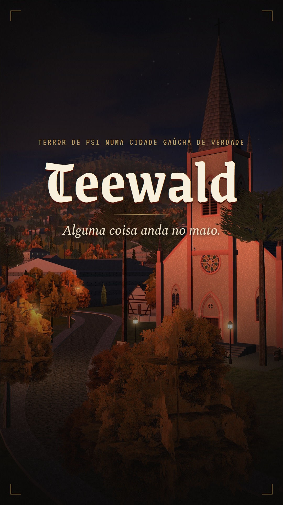

Teewald
Survival horror com cara de PS1 numa cidade gaúcha de verdade. Maio de 1997. Alguma coisa anda no mato. ▶ Grátis no navegador
O perfil no fim da semana 5. Clique numa miniatura para ver a imagem inteira.
Stories
Reels

Survival horror com cara de PS1 numa cidade gaúcha de verdade. Maio de 1997. Alguma coisa anda no mato. ▶ Grátis no navegador
O perfil no fim da semana 5. Clique numa miniatura para ver a imagem inteira.
